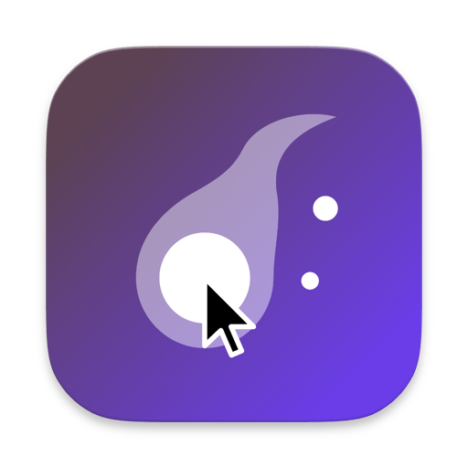

Cursor Fatuus
A foolish fire for your cursor.
Soft glow that follows your pointer.
Download for Mac
macOS 14+

Lose your cursor here.
Tune the glow from the settings panel.
A browser approximation.
Small, quiet, always there.
Follows you
Across every display and application, even full-screen.
Tint
Optionally colored, at any opacity.
Blur & invert
Calm the clutter under the pointer, or flip its colors so the cursor stands out.
Radius & softness
From a crisp disc to a single gentle halo.
No weird permissions
It never records or reads your screen. Nothing to approve.
Out of the way
Lives in the menu bar. No Dock icon, no windows.
Lead the wisp home.
Open the disk image and drag Cursor Fatuus into Applications. It shows up in your menu bar.
First launch only. The app isn't notarized by Apple, so macOS blocks it once. Open System Settings, scroll Privacy & Security down to Security, and click Open Anyway.
Security
“Cursor Fatuus” was blocked to protect your Mac.